Note to non-wiki readers: This documentation is generated from the Eclipse wiki - if you have corrections or additions it would be awesome if you added them in the original wiki page .
The GEF4 MVC component provides support for building up graphical editors and views based on a model-view-controller architecture and is the intended replacement for GEF (MVC) 3.x. It is internally composed out of four modules, which provide toolkit-independent base abstractions and implementations ( MVC ), JavaFX-specific specializations ( MVC.FX ), and Eclipse UI-integration for both ( MVC.UI , MVC.FX.UI). In addition there is a deployed MVC Logo Example.
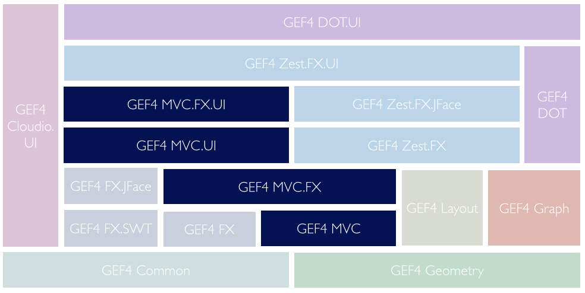
The MVC module of GEF4 MVC offers those core concepts that are independent of any concrete rendering toolkit as well as of the Eclipse UI. As indicated by its name, the module provides a model-view-controller architecture that can be used to build up graphical editors and views. In good tradition with GEF (MVC) 3.x, 'controllers' are referred to as 'parts' (while the term 'visual part' instead of 'edit part' is used here, to depict that the MVC framework is not limited to editors alone).
A graphical application is thus composed of one or more viewers, where each viewer ( IViewer) is populated by a set of visual parts ( IVisualPart), which control the visuals that are rendered inside the viewer's controls. Those visual parts that are responsible of controlling to be visualized contents, are referred to as content parts ( IContentPart). They are accompanied by feedback parts ( IFeedbackPart) and handle parts ( IHandlePart), which do not control visualized contents but feedback or handle visuals that are needed for user interaction. All visual parts are arranged in a hierarchy (which resembles the hierarchy of visuals) that is rooted by a 'root part' ( IRootPart).
Besides the parent-child relationship that establishes the hierarchy, visual parts may also be related to each other by means of an anchorage-anchor relationship. That is, a visual part that is placed at an arbitrary location within the hierarchy may be anchored on another anchorage part. As the visual part hierarchy has to correspond to the visual hierarchy, this mechanism is very useful when parts that control visuals that are placed in arbitrary places within the visual hierarchy have to be related to each other. In a graphical application that usually organizes visuals into layers, it can for instance be used to update feedback or handles. By explicitly anchoring a feedback part on an underlying ( anchorage) target content part, the feedback part inter alia obtains the necessary hooks to listen for changes of the content part visual (e.g. position changes) and to update its own feedback visual accordingly.
Tools ( ITool) are used to interact with the parts inside a viewer. Each tool should be responsible of handling a certain interaction gesture (e.g. mouse click/drag or touch-based pinch/spread), by locating respective target parts (e.g. via hit-testing on the visual) and forwarding the interaction to them. While a tool should not have own interaction logic, it is responsible of handling the interaction, to which several parts may contribute e.g. by updating their visuals and contents, as a whole. That is, the tool has to ensure that all modifying operations that result from a certain interaction, are executed in a single (undoable) transaction. As an interaction may span several viewers (e.g. a drag/drop operation), tools are bound to a domain ( IDomain), to which also all viewers that make up a graphical application are bound. The domain maintains a global operation history and facilities to initialize and commit transactions.
The handling of an interaction is not performed directly by the target visual parts themselves, but by respective policies ( IPolicy) that are bound to them. A policy is a (passive) strategy that encapsulates a certain undoable logic. The active tool that handles an interaction takes this into account, as it locates target parts also by evaluating their supported policies, and interacts with these (interaction) policies instead of the visual part itself. Each (interaction) policy is related to one or more gestures (e.g. what to do on click/drag) and may thus be accessed by several tools. It may handle the response to an interaction directly, e.g. by manipulating the viewer state (e.g. changing the current selection when the target part gets clicked), or can delegate it to certain (transaction) policies that manipulate the contents as a result of an interaction (and have to do this by means of executing operations within the currently active transaction, the respective interaction tool has opened via the domain).
The viewer state (e.g. the current selection), which might be manipulated as the result of an interaction, is represented by means of dedicated models (e.g. ContentModel or SelectionModel), which are bound to each viewer. As changes to the viewer state, as well as to the visualized contents, may lead to necessary viewer updates as well, behaviors ( IBehavior) may be bound to parts similar to policies. In contrast to policies, behaviors are active themselves, that is they will actively listen for changes (e.g. newly added content) and perform a certain. Behaviors are also responsible of creating and disposing respective visual parts as needed (e.g. to update selection feedback as a result of changes to the selection model). In contrast to policies, the reactions performed by behaviors are not executed on the operation history and are thus not undoable.
The {Root} package contains a com.google.inject.Module] that defines default bindings for MVC.
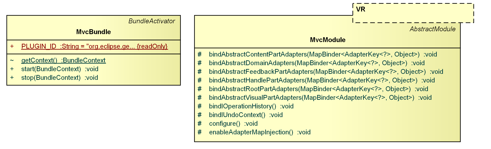
The MvcModule defines methods that register certain default bindings, which can be refined (overridden) by sub-classes. It also defines a couple of (empty) hook methods for bindings that subclasses should define.
The Behaviors package contains the IBehavior and AbstractBehavior definitions. Additionally, it provides various IBehavior implementations and a related utility class.
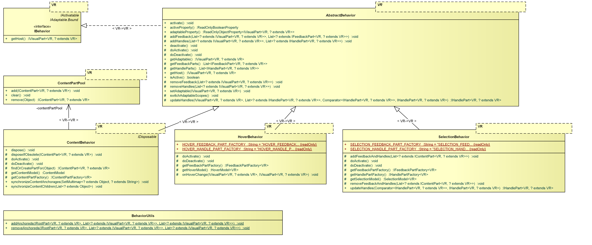
An IBehavior is bound to an
IVisualPart, referred to as the
host of the behavior. It actively listens to changes (usually of a viewer model like the
SelectionModel or
ContentModel) that affect its host and encapsulates a (not undoable) reaction to these changes, like showing or hiding feedback or handles. The
SelectionBehavior for instance listens to changes of the
SelectionModel and generates (or removes) selection feedback and handles in case its host is selected or deselected. To support proper registration of listeners, IBehavior extends
org.eclipse.gef4.common.activate.IActivatable, so it is activated/deactivated by its host whenever the host itself is activated/deactivated. Registering and unregistering listeners can thus be performed during the activation and deactivation respectively.
An IBehavior is similar to an
IPolicy in that it is bound to an
IVisualPart. However, policies are not active by themselves (they are always called from the outside). Further, the response of an IBehavior is not meant to be undoable, whereas the response of an
IPolicy is.
The AbstractBehavior handles activation and deactivation and provides methods to add/remove feedback and handle parts using the
IFeedbackPartFactory and
IHandlePartFactory of the
IViewer.
The BehaviorUtils class provides utility methods for establishing/unestablishing anchored-anchorage relations. These methods are used by the
AbstractBehavior when adding/removing feedback or handles.
The ContentBehavior is listening for
ContentModel changes to initiate a content synchronization upon changes. During a content synchronization, the currently active content parts are checked against the current content objects, i.e. content parts are created or removed based on the parent-child and anchored-anchorage relations between the content objects as defined by the content parts.
A content part that is removed is stored in a ContentPartPool, so that it can be re-used if it is needed later, and does not have to be re-created.
The HoverBehavior reacts to
HoverModel changes. It can be bound to all content parts that should generate feedback/handles when the mouse hovers the part.
The SelectionBehavior reacts to
SelectionModel changes. It can be bound to all content parts that should generate feedback/handles when the part is selected.
The Domain package contains the IDomain abstraction and its related AbstractDomain realization.
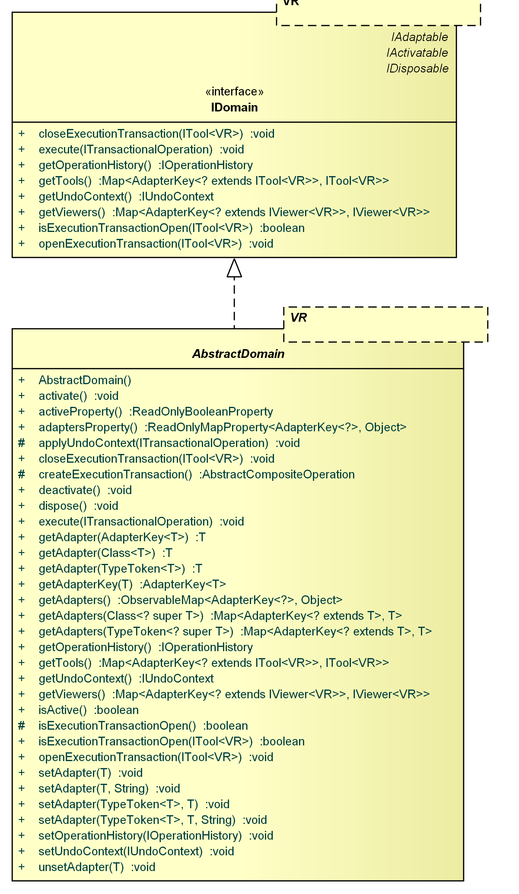
The IDomain represents the collective state of a graphical application, i.e. it is composed of all
IViewers and
ITools. Additionally, the IDomain provides an
org.eclipse.core.commands.operations.IOperationHistory and
org.eclipse.core.commands.operations.IUndoContext, which are used by policies to change the state of the application.
The Models package contains all viewer models, i.e. the data constituting a viewer state.
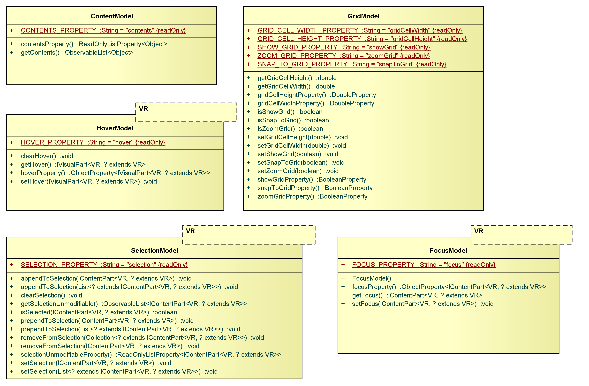
The ContentModel stores the viewer's contents, i.e. the data that is processed by your application.
The FocusModel stores the
IVisualPart with keyboard focus, i.e. the part that will receive all keyboard input.
The GridModel stores the viewer's background grid settings:
true or false, indicates whether the visualization should snap to grid points.
true or false, indicates whether to show the grid, or not.
true or false, indicates whether to zoom the grid, or not.
Double, specifies the width of grid cells.
Double, specifies the height of grid cells.
The HoverModel stores the currently hovered
IVisualPart.
The SelectionModel stores all currently selected
IContentParts.
The Operations package contains implementations of IUndoableOperation which can be used to manipulate the default models, especially content creation and removal.
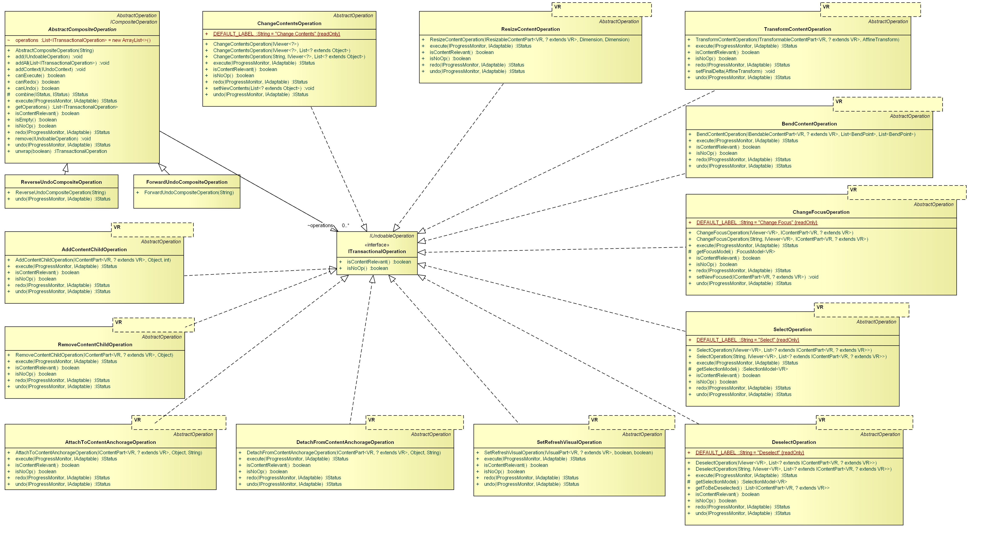
The ITransactionalOperation is a specialization of
org.eclipse.core.commands.operations.IUndoableOperation, which further supports querying for content relevance and effect of the encapsulated operation.
The AbstractCompositeOperation is the base class for two concrete
org.eclipse.core.commands.operations.ICompositeOperation implementations:
ForwardUndoCompositeOperation and
ReverseUndoCompositeOperation.
The AddContentChildOperation can be used to add a content child to an
IContentPart. It relies on the
IContentPart's addContentChild() method for doing this.
This operation is the counterpart of the RemoveContentChildOperation.
The AttachToContentAnchorageOperation can be used to attach an
IContentPart to a content anchorage. It relies on the
IContentPart's attachToContentAnchorage() method for doing this.
This operation is the counterpart of the DetachFromContentAnchorageOperation.
The BendContentOperation allows to bend the content of an
BendableContentPart.
The ChangeContentsOperation allows to exchange the contents hold by the
ContentModel.
The ChangeFocusOperation can be used to set the currently focused part by manipulating the
FocusModel.
The DeselectOperation can be used to clear the currently selected parts by manipulating the
SelectionModel.
The DetachFromContentAnchorageOperation can be used to detach an
IContentPart from a content anchorage. It relies on the
IContentPart's detachFromContentAnchorage() method for doing this.
This operation is the counterpart of the AttachToContentAnchorageOperation.
The ForwardUndoCompositeOperation is a specific
AbstractCompositeOperation. It will execute(), redo(), and undo() its operations in the order they were added to the composite operation.
The RemoveContentChildOperation can be used to remove a content child from an
IContentPart. It relies on the
IContentPart's removeContentChild() method for doing this.
This operation is the counterpart of the AddContentChildOperation.
The ResizeContentOperation allows to resize the contents of an
ResizableContentPart.
The ReverseUndoCompositeOperation is a specific
AbstractCompositeOperation. It will execute() and redo() its operations in the order they were added to the composite operation, however it will undo() its operations in reverse order.
The SelectOperation can be used to manipulate the currently selected parts by manipulating the
SelectionModel.
The SetRefreshVisualOperation can be used to enable/disable the #refreshVisual() method for a specific
IVisualPart.
The TransformContentOperation can be used to transform the content of an
ITransformableContentPart.
The Parts package contains all abstractions related to controllers (aka parts) in a model-view-controller architecture. For each abstraction, a corresponding (abstract) realization is provided, from which specific controllers can be sub-classed.
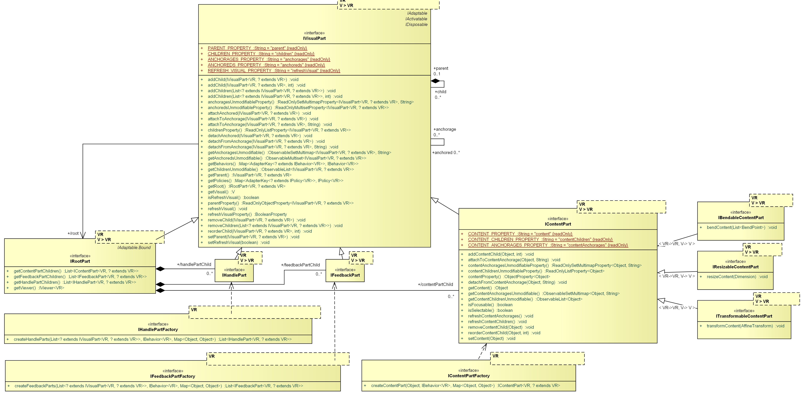
The IVisualPart interface is the main
MVC abstraction for controller objects, and therefore, controls a visual and handles user interaction. Visual parts are organized in a hierarchy, i.e. every part (except the root part) is associated with a parent part, and can control a number of children parts. Additional to the parent-child relations, visual parts can be part of anchored-anchorage relations, which are independent to the hierarchy, i.e. anchoreds and anchorages can be located at arbitrary places within the hierarchy.
Visual parts are adaptable, so that you can adapt policies and behaviors to them (as well as anything else if needed). This is an integral part of user interaction, because the tools will delegate input events to corresponding policies of the visual part which controls the event target (visual). Visual parts are also activatable. During activation/deactivation they will activate/deactivate their adapters.
Moreover, an IVisualPart exposes observable properties for:
"active": This visual part was activated/deactivated."adapters": The adapters (policies, behaviors, etc.) of this visual part changed."parent": The parent of this visual part changed."children": The children of this visual part changed."anchorages": The anchorages of this visual part changed."anchoreds": The anchoreds of this visual part changed.The IRootPart interface is a specialization of the
IVisualPart interface. There is exactly one IRootPart per
IViewer. It contains all
IContentParts,
IFeedbackParts, and
IHandleParts as children and manages the root visuals.
The IContentPart interface is a specialization of the
IVisualPart interface. Content parts are bound to content model elements, i.e. they provide a link to the model, and allow manipulations of the model via addContentChild(), removeContentChild(), attachToContentAnchorage(), and detachFromContentAnchorage().
The IFeedbackPart interface is a specialization of the
IVisualPart interface. Feedback parts are used to give visual feedback to the user during interactions. They are usually rendered on top of the content parts.
The IHandlePart interface is a specialization of the
IVisualPart interface. Handle parts are used for visual handles, which can be used for interaction, i.e. to manipulate elements. They are usually rendered on top of the feedback parts.
The IContentPartFactory interface is part of a default mechanic in
MVC: It is used during the content synchronization within the
ContentBehavior to create new content parts. Therefore, if you want to use this default mechanic, you have to supply an IContentPartFactory suitable to your content model.
The ITransformableContentPart interface is to be implemented by
IContentParts, which support transformations of their content. This is e.g. used to persist a translate operation.
The IResizableContentPart interface is to be implemented by
IContentParts, which support resize of their content. This is e.g. used to persist a resize operation.
The IBendableContentPart interface is to be implemented by
IContentParts, which support bending of their content (i.e. manipulation throw inserting or moving of bend points). This is e.g. used to persist a bend operation.
The IFeedbackPartFactory interface is part of a default mechanic in
MVC: It is used for creating feedback parts within the default behaviors, i.e. in response to mouse hover or selection changes.
The IHandlePartFactory interface is part of a default mechanic in
MVC: It is used for creating handle parts within the default behaviors, i.e. in response to mouse hover or selection changes.
The PartUtils class is a collection of utility methods when working with visual parts.
The Policies package contains the IPolicy abstraction, a related abstract base implementation ( AbstractPolicy), and concrete implementations for the manipulation of the ContentModel, namely ContentPolicy, CreationPolicy, and DeletionPolicy.
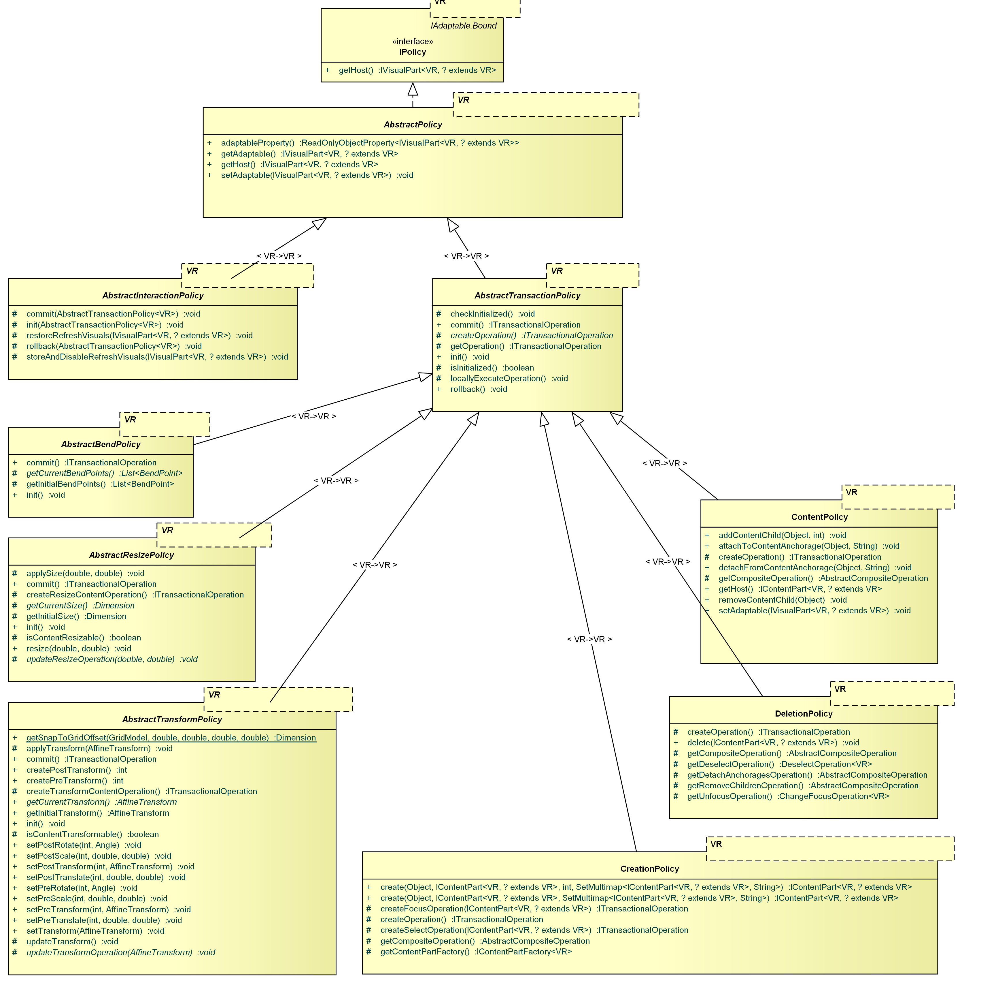
An IPolicy is bound to an
IVisualPart, referred to as the
host of the policy. There are basically two kinds of policies, interaction and transaction policies. An interaction policy is called by a
ITool to handle part of an interaction (e.g. click, drag). A transaction policy is one that may be used by other (interaction or transaction) policies to actually perform a visual or semantic operation (e.g. create model element). It has to encapsulate the to be performed operation as an
ITransactionalOperation.
An IPolicy is similar to an
IBehavior in that it is bound to an
IVisualPart. However, behaviors are active by themselves (they actively listen to changes), while policies are always called from the outside (they are passive). Further, the response of an IPolicy is meant to be undoable, whereas the response of an
IBehavior is not.
The AbstractTransactionPolicy is the base class for all policies that perform undoable changes. The offer init(), commit(), and rollback(), which enclose an undoable transaction.
The AbstractInteractionPolicy is the base class for all policies that response to an interaction gesture. They usually delegate to some transactional policies to perform a visual or content relevant reaction.
The ContentPolicy is an
AbstractTransactionPolicy to handle content changes, i.e. adding/removing of content children, as well as attaching/detaching to/from content anchorages. Therefore, it can be used to retrieve an operation which performs the desired content changes.
The CreationPolicy is an
AbstractTransactionPolicy that handles the creation of new content objects using the
ContentPolicy. Therefore, it can be used to retrieve an operation which performs the desired creations.
The DeletionPolicy is an
AbstractTransactionPolicy that handles the deletion of existing content objects using the
ContentPolicy. Therefore, it can be used to retrieve an operation which performs the desired deletions.
The AbstractTransformPolicy is an
AbstractTransactionPolicy that supports content transformation of
ITransformableContentParts.
The AbstractResizePolicy is an
AbstractTransactionPolicy that supports content resizing of
IResizableContentParts.
The AbstractBendPolicy is an
AbstractTransactionPolicy that supports content bending of
IBendableContentParts.
The Tools package contains the ITool abstraction and its related AbstractTool realization.
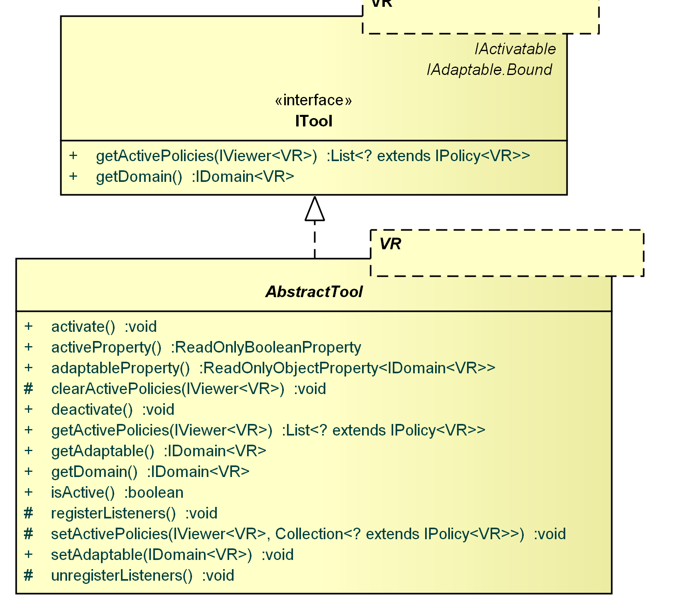
An ITool delegates input events to corresponding (interaction)
IPolicies, which are responsible of handling the interaction.
The Viewer package contains the IViewer abstraction and the related AbstractViewer realization.
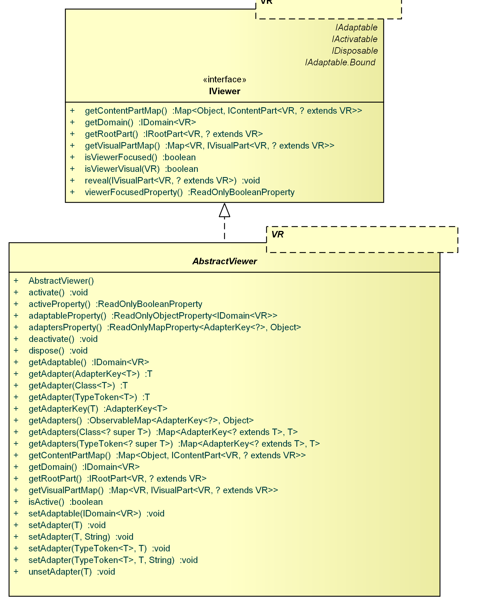
An IViewer is the container for an
IVisualPart hierarchy and provides a link to the
IDomain.
The MVC.FX module of GEF4 MVC provides specializations of the abstractions and implementations provided by MVC, which are bound to JavaFX-based visualizations.
The {Root} package contains a Guice Module with default bindings for MVC.FX.
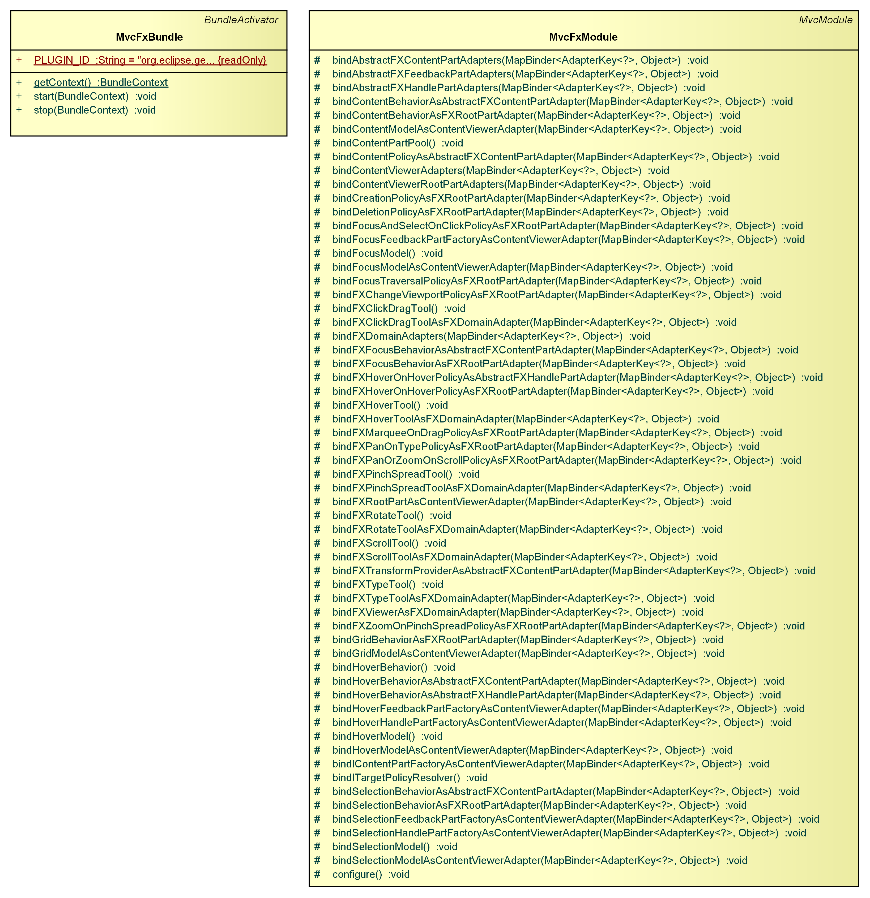
The MvcFxModule extends
MvcModule. It defines methods to register bindings for the JavaFX-specific extensions to
MVC and adds respective default bindings.
The Behaviors package contains JavaFX/ MVC.FX-specific IBehavior implementations.
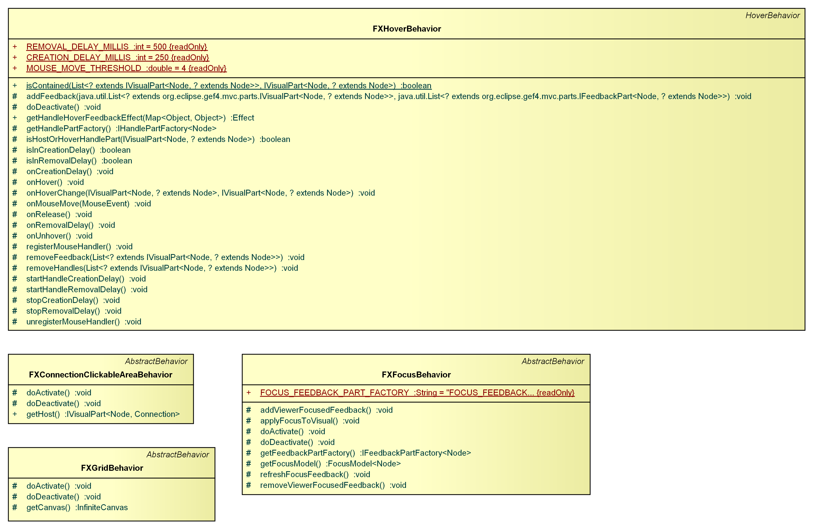
The FXConnectionClickableAreaBehavior controls the size of the connection's curve node visible area dependent on the zoom level.
The FXFocusBehavior is listening for
FocusModel changes and transfers them over to JavaFX.
The FXGridBehavior is listening for
GridModel changes in order to apply those changes to the GridLayout of the
IViewer.
The FXHoverBehavior is listening for
HoverModel changes in order to generate feedback/handles when hovering a part.
The Domain package contains a JavaFX-specific IDomain implementation, which does not provide own logic but is used as a target for adapter map bindings within MVC.FX.
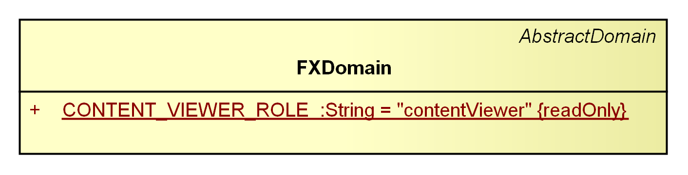
The FXDomain parameterizes the
AbstractDomain with
javafx.scene.Node, but does not extend it further. It is basically intended to provide a target for adapter bindings and adapter scoping (see
GEF4 Common).
The Operations package contains all IUndoableOperation implementations contributed by MVC.FX.
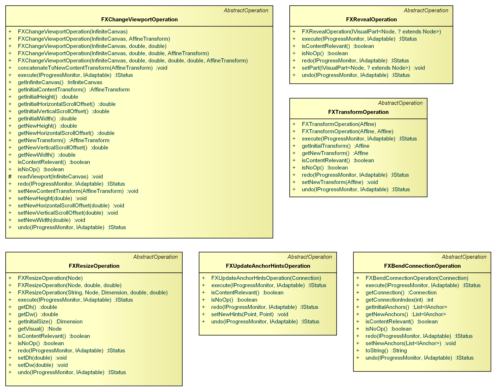
The FXBendConnectionOperation can be used to manipulate the points constituting an
Connection, i.e. its start point, way points, and end point. When manipulating the start or end point, it does also connect it to the
IVisualPart under mouse when applicable.
The FXChangeViewportOperation can be used to manipulate the
InfiniteCanvas of the content
FXViewer, i.e. the scroll offset and content transformation.
The FXResizeOperation can be used to resize a
javafx.scene.Node.
The FXRevealOperation can be used to reveal an
IVisualPart in its
IViewer.
The FXTransformOperation can be used to manipulate the transformation associated with an
IVisualPart due to
FXTransformProvider.
The Parts package contains all IContentPart, IVisualPart, IFeedbackPart, and IHandlePart implementations and related classes.
The AbstractFXContentPart is a specialization of the AbstractContentPart which establishes
javafx.scene.Node as the visual root type. It does also register its whole visual hierarchy at the visual-part-map.
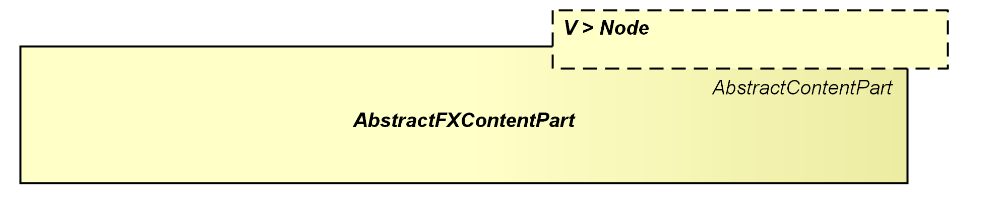
The AbstractFXFeedbackPart is a specialization of the
AbstractFeedbackPart which establishes
javafx.scene.Node as the visual root type. It does also register a
org.eclipse.gef4.fx.listeners.VisualChangeListener upon attachment to an anchorage which refreshes the feedback visual upon anchorage visual changes.
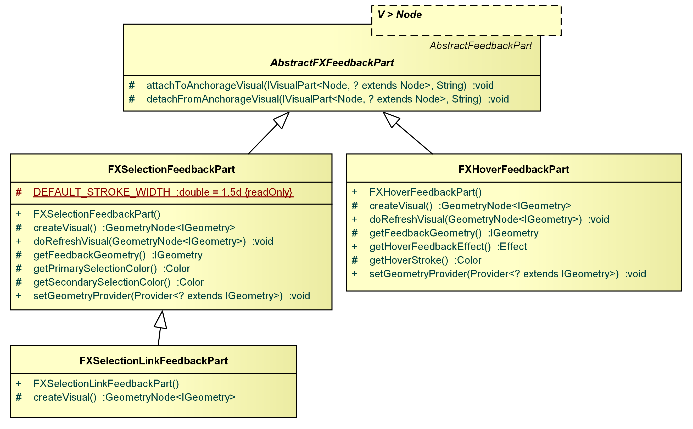
The FXHoverFeedbackPart displays a feedback geometry in response to
HoverModel changes.
The FXSelectionFeedbackPart displays a feedback geometry in response to
SelectionModel changes and
FocusModel changes.
The FXSelectionLinkFeedbackPart is a specialization of the FXSelectionFeedbackPart which displays a dashed feedback geometry in response to
SelectionModel changes and
FocusModel changes.
The FXDefaultFocusFeedbackPartFactory , FXDefaultHoverFeebackPartFactory and FXDefaultSelectionFeedbackPartFactory use FXHoverFeedbackPart, FXSelectionFeedbackPart, and FXSelectionLinkFeedbackPart for generating feedback if the associated geometry provider is bound as an adapter on the hovered/selected part.
The AbstractFXHandlePart is a specialization of the
AbstractHandlePart which establishes
javafx.scene.Node as the visual root type. It does also register a
org.eclipse.gef4.fx.listeners.VisualChangeListener upon attachment to an anchorage which refreshes the handle visual upon anchorage visual changes.
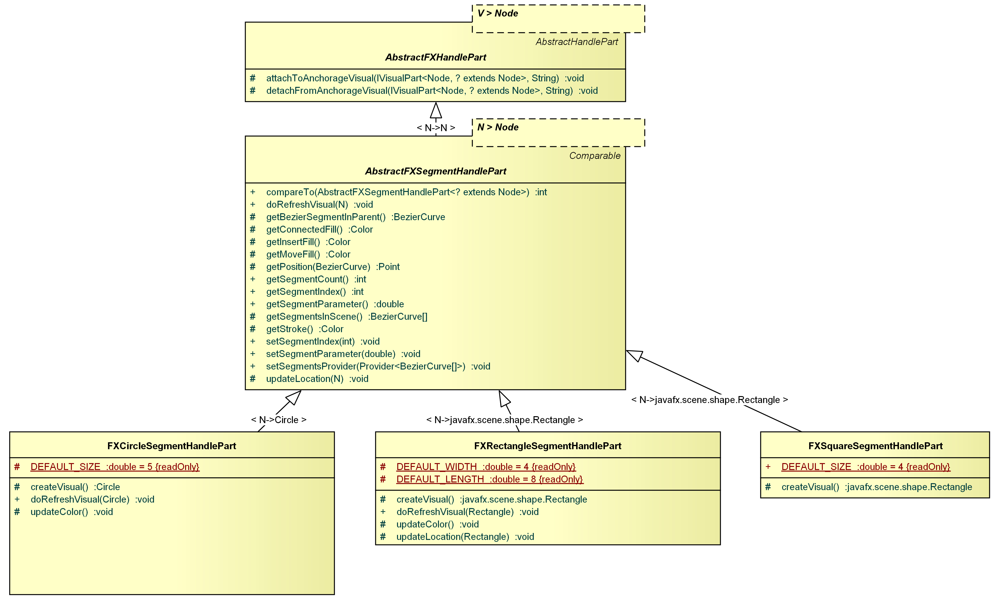
The AbstractFXSegmentHandlePart is a specialization of the AbstractFXHandlePart which is bound to a segment of a poly-bezier handle geometry, represented by an array of BezierCurves. A segment index identifies that segment (0, 1, 2, ...). A segment parameter specifies the position of this handle part on the segment (0 = start, 0.5 = mid, 1 = end).
The FXCircleSegmentHandlePart is a specialization of the AbstractFXSegmentHandlePart which uses a
javafx.scene.shape.Circle for the handle visualization.
The FXRectangleSegmentHandlePart is a specialization of the AbstractFXSegmentHandlePart which uses a
javafx.scene.shape.Rectangle for the handle visualization.
The AbstractFXRootPart is a specialization of the
AbstractRootPart which establishes
javafx.scene.Node as the visual root type. It does also register the part as soon as a link to the
IViewer is obtained.
The FXDefaultHoverHandlePartFactory and FXDefaultSelectionHandlePartFactory use FXCircleSegmentHandlePart, FXRectangleSegmentHandlePart, and FXSquareSegmentHandlePart for generating handles if the associated geometry provider is bound as an adapter on the hovered/selected part.
The FXRootPart provides a content layer, a feedback layer, and a handle layer in which the visuals of the corresponding parts are displayed. The feedback layer is above the content layer, and the handle layer is above the feedback layer.
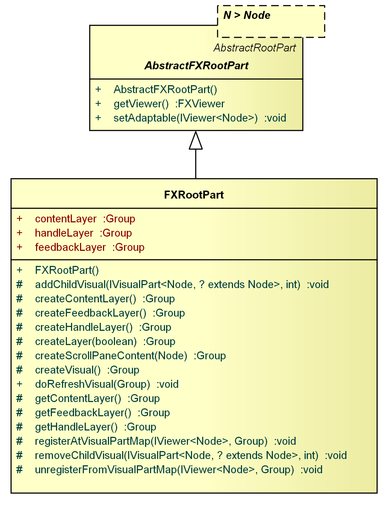
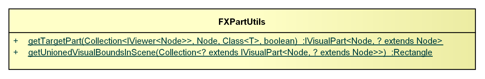
The Policies package contains all IPolicy implementations contributed by MVC.FX. These can be divided into transactional policies, which can be used to generate an operation that performs certain changes, and interaction policies, which are associated with certain user interactions (mouse click/drag, touch pinch/spread, etc.).
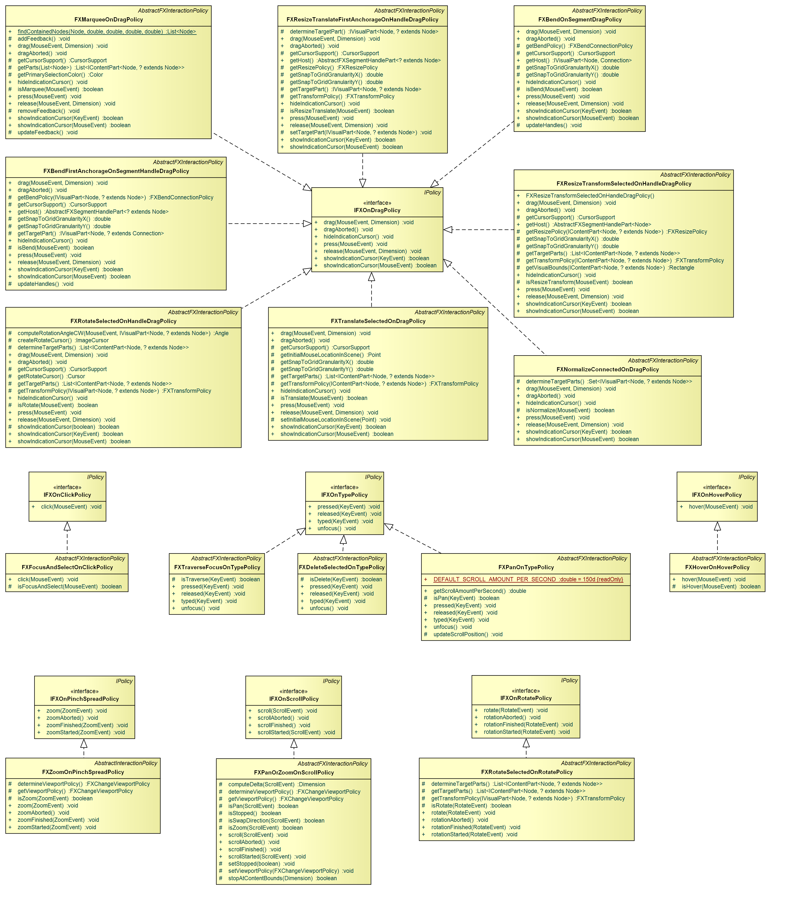
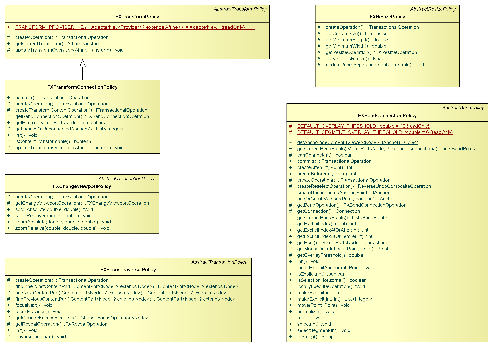
An IFXOnClickPolicy is called upon mouse click events by the
FXClickDragTool. You can use it as an adapter on any
IVisualPart for which mouse click interaction is desired, and you can also register multiple instances of IFXOnClickPolicy on the same
IVisualPart (with different adapter roles).
An IFXOnDragPolicy is called during a mouse press-drag-release gesture by the
FXClickDragTool. You can use it as an adapter on any
IVisualPart for which mouse drag interaction is desired, and you can also register multiple instances of IFXOnDragPolicy on the same
IVisualPart (with different adapter roles).
An IFXOnHoverPolicy is called upon mouse hover by the
FXHoverTool. You can use it as an adapter on any
IVisualPart for which mouse hover interaction is desired, and you can also register multiple instances of IFXOnHoverPolicy on the same
IVisualPart (with different adapter roles).
An IFXOnPinchSpreadPolicy is called during a pinch/spread touch gesture by the
FXPinchSpreadTool. You can use it as an adapter on any
IVisualPart for which pinch/spread touch interaction is desired, and you can also register multiple instances of IFXOnPinchSpreadPolicy on the same
IVisualPart (with different adapter roles).
An IFXOnRotatePolicy is called during a rotate touch gesture by the
FXRotateTool. You can use it as an adapter on any
IVisualPart for which rotate touch interaction is desired, and you can also register multiple instances of IFXOnRotatePolicy on the same
IVisualPart (with different adapter roles).
An IFXOnScrollPolicy is called upon mouse wheel scrolling or during a touch scroll gesture by the
FXScrollTool. You can use it as an adapter on any
IVisualPart for which scroll interaction is desired, and you can also register multiple instances of IFXOnScrollPolicy on the same
IVisualPart (with different adapter roles).
An IFXOnTypePolicy is called upon key presses and releases by the FXTypeTool. You can use it as an adapter on any
IVisualPart for which keyboard interaction is desired, and you can also register multiple instances of IFXOnTypePolicy on the same
IVisualPart (with different adapter roles).
The FXFocusAndSelectOnClickPolicy is an
IFXOnClickPolicy that focusses and selects the host part upon mouse click. It manipulates the
FocusModel and
SelectionModel.
The FXMarqueeOnDragPolicy is an
IFXOnDragPolicy that can be used to span a marquee selection area covering multiple parts using mouse drag. It manipulates the
SelectionModel.
The FXTranslateSelectedOnDragPolicy is an
IFXOnDragPolicy that relocates the host visual when dragging with the mouse. It is based on the
FXTransformPolicy of its host.
The FXBendOnSegmentDragPolicy is an
IFXOnDragPolicy that can be used to drag individual segments of a
Connection with an orthogonal
org.eclipse.gef4.fx.nodes.OrthogonalRouter. It is based on the
FXBendConnectionPolicy of its host.
The FXNormalizeConnectedOnDragPolicy is an
IFXOnDragPolicy used to remove superfluous segments of outgoing or incoming
org.eclipse.gef4.fx.connection.Connections with an orthogonal
OrthogonalRouter when dragging the source or target element. It is based on the
FXBendConnectionPolicy of the connected parts.
The FXBendOnSegmentHandleDragPolicy is an
IFXOnDragPolicy which can be applied to
FXSegmentHandlePart to bend the host's first anchorage, i.e. manipulate the
org.eclipse.gef4.fx.nodes.Connection visual of the first anchorage of the host
FXSegmentHandlePart. It uses the
FXBendConnectionPolicy of the first anchorage.
The FXResizeRelocateOnHandleDragPolicy is an
IFXOnDragPolicy that can be applied to
FXSegmentHandlePart to resize and relocate the first anchorage of its host on mouse drag. It is based on
FXResizePolicy and
FXTransformPolicy of the selected parts.
The FXRotateSelectedOnHandleDragPolicy is an
IFXOnDragPolicy that that can be applied to
FXSegmentHandlePart to rotate the selected parts on mouse drag. It is based on the
FXTransformPolicy of the selected parts.
The FXResizeTransformFirstAnchorageOnHandleDragPolicy is an
IFXOnDragPolicy that that can be applied to
FXSegmentHandlePart to resize and transform the visual of its host's first anchorage on mouse drag. It is based on the
FXResizePolicy and
FXTransformPolicy of the host's first anchorage.
The FXHoverOnHoverPolicy is an
IFXOnHoverPolicy that hovers the host part upon mouse hover. It manipulates the
HoverModel.
The FXZoomOnPinchSpreadPolicy is an is an
IFXOnPinchSpreadPolicyzooms the
InfiniteCanvas of the content
FXViewer with a touch pinch/spread gesture. It is based on the
FXChangeViewportPolicy of its host.
The FXRotateSelectedOnRotatePolicy is an is an
IFXOnRotatePolicy that rotates the selected parts with a touch rotate gesture. It is based on the
FXTransformPolicy of the selected parts.
The FXPanOrZoomOnScrollPolicy changes the scroll offset or zoom level of the
org.eclipse.gef4.fx.nodes.InfiniteCanvas of the content
FXViewer upon mouse/touch scroll events. It is based on the
FXChangeViewportPolicy of the
FXRootPart.
The FXDeleteSelectedOnTypePolicy is an
IFXOnTypePolicy that deletes the selected parts when pressing the <Delete> key. It manipulates the
ContentModel.
The FXPanOnTypePolicy is an
IFXOnTypePolicy that changes the scroll offset of the
org.eclipse.gef4.fx.nodes.InfiniteCanvas of the content
FXViewer upon arrow key presses. It is based on the
FXChangeViewportPolicy of the
FXRootPart.
The FXSelectFocusedOnTypePolicy is an
IFXOnTypePolicy that selects/deselects the focus element on (select) key type. It manipulates the
FocusModel.
The FXTraverseFocusOnTypePolicy is an
IFXOnTypePolicy that traverses the focus element on (tab) key type. It manipulates the
FocusModel.
The FXChangeViewportPolicy is a transaction policy that can be used to manipulate
org.eclipse.gef4.fx.nodes.InfiniteCanvas of the content
FXViewer.
The FXTransformPolicy is a transaction policy that can be used to transform the visual of its host.
The FXResizePolicy is a transaction policy that can be used to resize the visual of its host.
The FXBendConnectionPolicy is a transaction policy that can be used to manipulate the points constituting an
org.eclipse.gef4.fx.nodes.Connection, i.e. its start point, way points, and end point. When moving a point the policy takes care of:
Per default, the FXBendConnectionPolicy can only be applied to those
IVisualParts which use
org.eclipse.gef4.fx.nodes.Connection as their visual. This can be adjusted by sub-classing and overriding the corresponding #getConnection() method.
The FXTransformConnectionPolicy is a specialization of
#FXTransformPolicy that can be applied to
IVisualParts which use
org.eclipse.gef4.fx.nodes.Connection as their visual. Per default, it transforms only those points of a connection that are not bound to an anchorage.
The Providers package provides a number of com.google.inject.Provider, which are used by several mechanisms:
Provider<IAnchor> to find an
org.eclipse.gef4.fx.anchors.IAnchor for an
IVisualPart at which a point of an
org.eclipse.gef4.fx.nodes.Connection can be attached.
Provider<Affine> to transform the visual of an
IVisualPart.
Provider<IGeometry> to determine the position and shape of feedback and handle visuals.
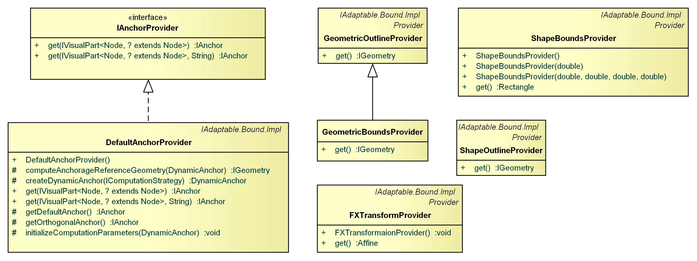
The DefaultAnchorProvider provides an anchor for a given (anchorage)
IVisualPart.
The FXTransformProvider adds an
javafx.scene.transform.Affine to the transforms list of the visual of the part at which it is bound as an adapter. It does also allow access to that
javafx.scene.transform.Affine, which is used by several (transaction) policies to perform transformations.
The GeometricOutlineProvider and GeometricBoundsProvider return the core geometry and related bounds of the visual of the part to which they are bound as an adapter.
The ShapeOutlineProvider and ShapeBoundsProvider do likewise for the visual (shape) outline and bounds.
The Tools package contains JavaFX-specific ITool implementations for different interactions (e.g. mouse drag).
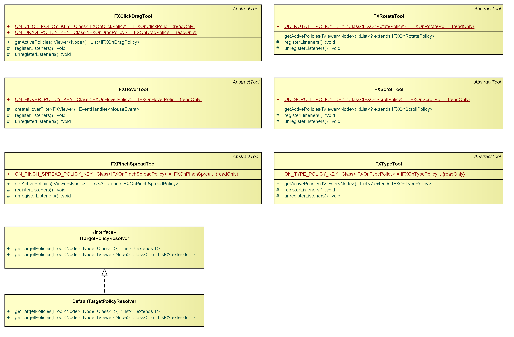
The FXClickDragTool registers listeners for mouse click and drag interactions. The target
IVisualPart is determined by searching the visual part hierarchy, beginning at the part that controls the visual, which was pressed, until a part is found that supports at least one
IFXOnClickPolicy or
IFXOnDragPolicy, respectively.
The FXHoverTool registers listeners for mouse hover interaction, i.e. mouse enter and mouse exit events for visuals. The target
IVisualPart is determined by searching the visual part hierarchy, beginning at the part that controls the visual, which was hovered, until a part is found that supports at least one
IFXOnHoverPolicy.
The FXPinchSpreadTool registers listeners for touch pinch/spread gesture interaction, i.e. moving two fingers apart or bringing them together (the default zoom gesture on many touch displays). The target
IVisualPart is determined by searching the visual part hierarchy, beginning at the part that controls the visual, which was touched, until a part is found that supports at least one
IFXOnPinchSpreadPolicy.
The FXRotateTool registers listeners for touch rotate gesture interaction, i.e. moving two fingers around each other (or moving one finger around another). The target
IVisualPart is determined by searching the visual part hierarchy, beginning at the part that controls the visual, which was touched, until a part is found that supports at least one
IFXOnRotatePolicy.
The FXScrollTool registers listeners for scroll interaction, which may either be mouse wheel scrolling, or touch scrolling, i.e. dragging two fingers up or down. The target
IVisualPart is determined by searching the visual part hierarchy, beginning at the part that controls the visual, which was scrolled or touched, until a part is found that supports at least one
IFXOnScrollPolicy.
The FXTypeTool registers listeners for keyboard interaction. The currently focused (see
FocusModel)
IVisualPart is used as the target part for keyboard interaction if it supports at least one
IFXOnTypePolicy.
The Viewer package contains a JavaFX-specific IViewer implementation.
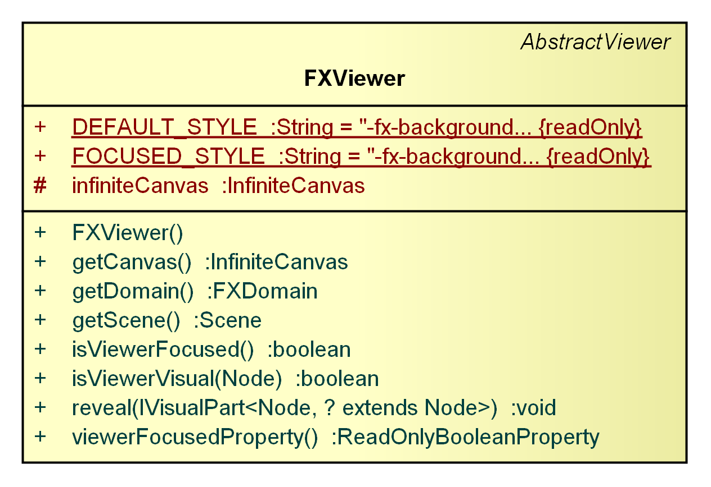
The FXViewer is a JavaFX-specific
IViewer implementation. It provides an
org.eclipse.gef4.fx.nodes.InfiniteCanvas as its visual control, to which the
FXRootPart adds respective top-level children.
The MVC.UI module of GEF4 MVC provides aspects for an integration into the Eclipse UI:
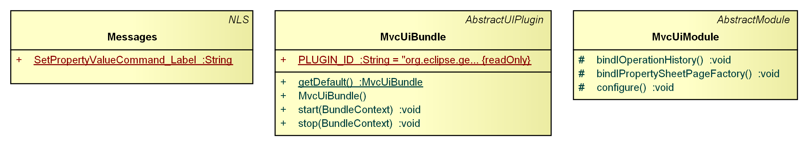
The MvcUiModule contains bindings for the Eclipse integration. Currently, only a binding for the
org.eclipse.core.commands.operations.IOperationHistory of the Eclipse workbench is provided, so that operations executed in the context of an
IDomain are undoable/redoable from the Eclipse UI.
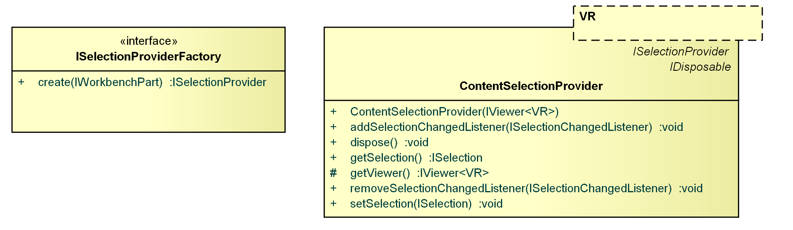
The ISelectionProviderFactory interface can be used to implement a factory that creates an
org.eclipse.jface.viewers.ISelectionProvider for a given
org.eclipse.ui.IWorkbenchPart.
The ContentSelectionProvider is an implementation of the
org.eclipse.jface.viewers.ISelectionProvider interface that provides the content elements of the currently selected
IContentParts, and can select
IContentParts based on their content elements.
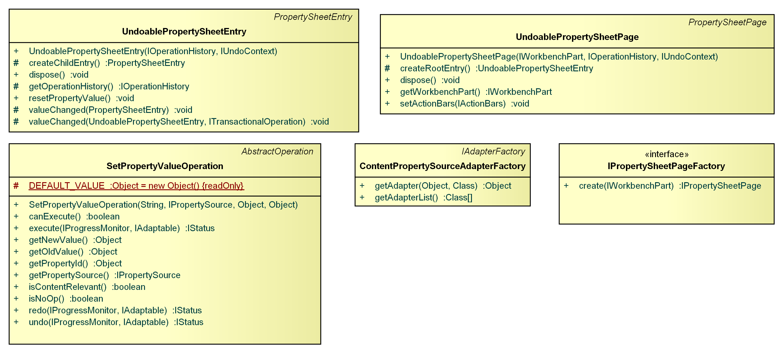
The IPropertySheetPageFactory interface allows to implement a factory to create an
org.eclipse.ui.views.properties.IPropertySheetPage for an
org.eclipse.ui.IWorkbenchPart.
The UndoablePropertySheetPage is a
org.eclipse.ui.views.properties.PropertySheetPage extension that allows to perform undo/redo of property value changes also in case the viewer/editor is not active.
The UndoablePropertySheetEntry provides undo support for changes made to
org.eclipse.ui.views.properties.IPropertySource by the Eclipse 'Properties' view. Clients can construct a
org.eclipse.ui.views.properties.PropertySheetPage and use this class as the root entry. All changes made to property sources displayed on that page will be done using the provided
org.eclipse.core.commands.operations.IOperationHistory.
The SetPropertyValueOperation can be used to set or reset the value of a property. It is used by the
UndoablePropertySheetEntry.
The ContentPropertySourceAdapterFactory adapts the content model objects of
IContentPart to
org.eclipse.ui.views.properties.IPropertySource.
The MVC.FX.UI module of GEF4 MVC provides JavaFX-specific aspects for an integration into the Eclipse UI.
The {Root} package contains a Guice Module which binds an org.eclipse.jface.viewers.ISelectionProvider and handles the construction of an FXCanvas to render the JavaFX scene graph.
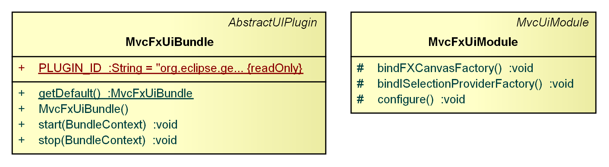
The MvcFxUiModule contains bindings for the JavaFX/Eclipse integration.
The Parts package contains spcific org.eclipse.ui.part.ViewPart and org.eclipse.ui.part.EditorPart implementations which wrap an FXCanvas.
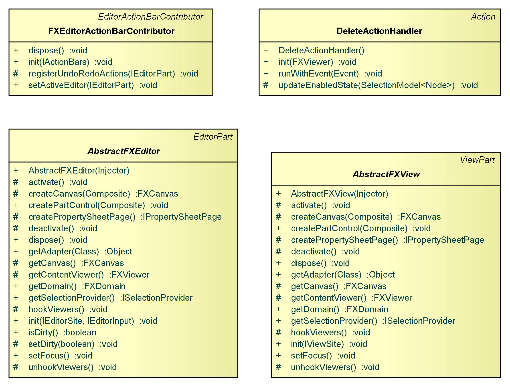
The JavaFX-unrelated classes in this package will be moved to the MVC.UI module as outlined in Bugzilla #469478.
The AbstractFXEditor is a
org.eclipse.ui.part.EditorPart extension, which can be used to embed an editor, based on
MVC.FX, into the Eclipse UI.
The FXEditorActionBarContributor is an
org.eclipse.ui.part.EditorActionBarContributor extension, which lets the undo/redo action group of the corresponding
org.eclipse.ui.part.IEditorPart contribute to the action bars.
The AbstractFXView is a
org.eclipse.ui.part.ViewPart extension, which can be used to embed a viewer, based on
MVC.FX, into the Eclipse UI.
The DeleteActionHandler handles deletion based on the selected
IContentParts.
The MVC.FX.UI module of GEF4 FX provides enhanced support for integrating with the Eclipse UI. Category:GEF
The Properties package provides support for integrating JavaFX-related cell editors into the Eclipse 'Properties' view.
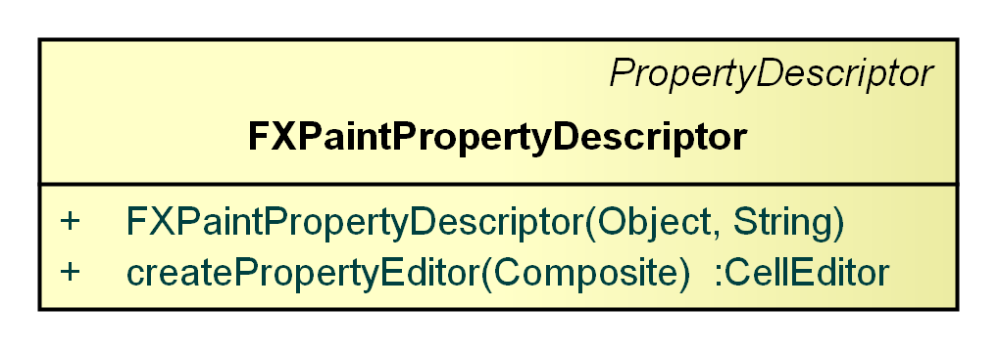
An FXPaintPropertyDescriptor is a property descriptor that integrates an
org.eclipse.gef4.fx.jface.FXPaintLabelProvider and
org.eclipse.gef4.fx.jface.FXPaintCellEditor.
GEF4 MVC was written completely from scratch. While some proven concepts have been transferred from GEF (MVC) 3.x, central concepts and mechanisms have been reworked. The most notable differences are: